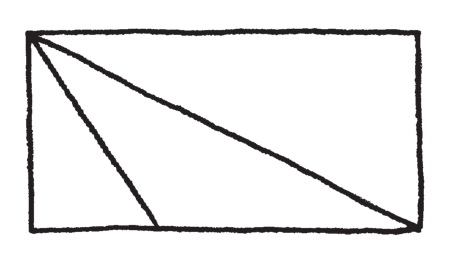
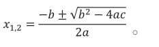

要抹杀学生对一门科目的热情与兴趣，最有效的方法就是把它列为必修课。把它列入标准化测验的主要科目，就能保证让它失去生命力。学校董事会不了解数学的本质，教育家、教科书的作者、出版商也不了解，悲哀的是，大部分的数学老师也不了解。问题的范围大到我都不知道要从何说起了。
让我们从“数学改革”的溃败开始说吧。多年来，觉得数学教育现状有问题的意识不断增加。为了“修正问题”，开始进行一堆研究；举办一堆研讨会；组成数不清的教师、教科书出版商及教育家（不管他们是谁）的专家小组。除了有利可图的教科书产业（任何一点点政治动荡就可以让他们将无法下咽的天书“改版”，从中得利），整个改革运动一直都是失焦的。数学课程不需要被改革，它需要的是被“砍掉重练”。
对于要以什么样的顺序教授哪些“主题”，或是要用这个符号而不是那个符号、要用什么型号的计算机，这种种的过度关注和细细斟酌，天呀，就像是对泰坦尼克号甲板上的座椅作重新排列！数学是理性的音乐（the music of reason）。搞数学是从事发现与猜测、直觉与灵感的活动；是进入疑惑的状态——不是因为它让你搞不懂，而是因为你给了它意义，而你还不知道你的创造会走向何处；是产生一个突破性的想法；是像艺术家一般遭遇挫折；是被几近痛苦的美丽所折服与赞叹；是感觉活着（alive）。该死！把这些从数学里拿掉，无论你开多少研讨会，都于事无补。就如医生，随便你动多少手术，反正你的病人已经死了。
所有这些“改革”最悲哀的地方，是企图“要让数学变有趣”和“与孩子们的生活产生关联”。你不需要让数学变得有趣——它本来就远超过你了解的有趣！而它的骄傲就在与我们的生活完全无关。这就是为什么它是如此有趣！
想要让数学呈现出和日常生活是相关联的，不可避免地就会显得牵强而做作：“小朋友，如果你会代数，那你就能算出来玛丽亚现在的年龄，如果我们知道她现在的年龄是她七年前年龄的两倍！”（难道有人会知道这样荒谬的信息，而不知道她的年龄吗？）代数不是跟日常生活有关，而是跟数与对称性有关——这是它的本质所要追寻的。
假设我知道两个数字的和与差，我要如何找出它们是哪两个数字？
这是一个结构简单且确切的提问，它不需要弄得吸引人。古时候的巴比伦人喜欢解答这类问题，我们的学生也是。（我希望你也能喜欢思考这个问题！）我们不需要把问题绕来绕去的，让数学与生活产生关联。它和其他形式的艺术用同样的方式来与生活产生关联一样：成为有意义的人类经验。
无论如何，你真的认为小孩子会想要和他们日常生活有关的东西吗？你认为像“复利”这样实用的东西会让小孩子觉得很兴奋吗？人们喜欢“奇幻”，而这正是数学能够提供的——日常生活中的消遣、现实工作世界的调剂。
当老师或教科书屈服于“做作”时，也会产生同样的问题。为了对抗所谓的“数学焦虑”（学校“造成”的一系列疾病之一），而把数学弄得看起来“友善、便利”。例如，为了帮助学生记忆圆的面积和圆周的公式，老师可能会发明一整套关于“圆周先生”（Mr. C）的故事，他绕着“面积太太”（Mrs. S）说，他的“两个派”如何的好（C=2πr），然后她的“派是方形的”（square，另一个意思是数学上的“平方”）（S=πr2），还有许多这类没有意义的故事。然而“真正的故事”是什么呢？是关于人类为了测量曲线所做的种种努力；是关于欧多克索斯（Eudoxus）、阿基米德（Archimedes）和“穷尽法”（method of exhaustion）；是关于神奇的π。到底什么比较有趣——用方格纸估算粗略的圆周？用别人给你的公式（不加解释，只是要你背起来然后不断地练习）来计算圆周？还是听听这个人类史上最美妙又奇幻的题目，最聪明和最具震撼力的想法是如何发生的？我们这不是在扼杀人们对“圆”的兴趣吗？
我们为什么不给学生一个机会聆听这些事情，让他们有机会真正地做一些数学，得出自己的想法、意见和回应呢？有哪个科目的惯常教法是不提来历、哲理、主题的发展、美学标准及目前状况的呢？有哪个科目会避而不谈它最初的来源——历史上一些最有创造力的人所创造出来的美妙艺术作品——而选择让三流的教科书把它低俗化？
学校里的数学，最主要的问题出在没有“问题”。我知道大家都认为在数学课堂里的问题，就是那些枯燥的“习题”。“这里有一个题型；这里是解答它的方法；这个会出现在考试里；今天的家庭作业是习题1-35题。”这样学习数学是很可悲的：人变成了训练有素的黑猩猩。
但是一个问题，一个真正符合人类天性的提问——是完全不同的。一个立方体的对角线，其长度为何？质数是无止境的吗？无限大是一个数字吗？在一个平面上用对称的方式铺瓷砖的方法有多少种？数学的历史，就是人类专注于像这类问题的历史，而不是无须动脑的反刍公式和演算（再加上那些设计来应用它们的做作习题）。
一个好的问题是你不知道“如何”解决它。这也使它成为一个好的谜题、一个好的机会。一个好的问题不会只单独待在那里，而是作为引导至其他有趣提问的跳板。一个三角形面积占外框长方形面积的一半，那么，一个长方体中的金字塔呢？我们可以用类似的方法来解决这个问题吗？
我可以理解训练学生娴熟于特定技巧的想法——我也会这样做。但这绝不是训练的目的。数学上的技巧，就如同其他艺术里的技巧，应该是配合背景而为的。伟大的问题、问题的历史、创意的过程——这才是完整的背景。丢给学生一个好的问题，让他们花力气去解决并尝到挫折，看看他们能得到什么。直到他们亟须一个想法时，再给他们一些技巧，但是不要给太多。
所以，丢开你的授课计划、投影机、讨人厌的彩色教科书、光盘机，以及现代教育马戏团里的所有东西，就单纯地和学生们一起做数学吧！美术老师不会浪费时间在教科书和特定技巧的机械式训练上。他们做他们学科里最自然的事情——让小孩子画画。他们在画架间走动，逐一给予建议和指导：
学生： “我在思考我们的三角形问题，然后我发现了一件事。如果这个三角形是斜的，那它就不是外框长方形的一半！你看——”

老师： “非常好的观察！我们的切割方式是假设三角形的顶点是落在其底部的范围内的。现在我们需要新的想法了。”
学生： “我应该要用其他的方法来切割吗？”
老师： “当然，各种想法都试试看吧。想到了什么就跟我说。”
那么，我们要如何教导学生做数学呢？我们可以选择适合他们喜好、个性和经验程度，能吸引他们又不做作的问题。我们给他们时间去探索发现，以及形成推理。我们帮助他们精炼他们的论述，并创造一个健全有活力的数学评论氛围。对于他们好奇心的突然转向，我们保持灵活和开放的态度。简而言之，我们和学生及学科之间要有真诚的知识上的关系。
当然，因为许多原因，我的建议无法实行。现在实施的课程表和测验标准实质上已经磨灭了教师的自主权。即使撇开这个事实，我也怀疑大多数的教师会想要和学生建立这样紧密的关系。这太容易受到责难，也承担太大的责任——简单地说，这个工作太繁重了！
被动地灌输出版商的“教材”，遵照指示“讲课、测验、反复练习”，这要容易多了。深入且周延地思考一个学科的意义，以及思考如何将那个意义直接且如实地传达给学生，则是太辛苦了。对于依据个人智慧和良知来做决定，这样困难的差事，我们都被鼓励要放弃，“按表操课”就好。因为这是阻力最小的路径：
教科书出版商:教师∷[ a]
A）药厂:医师
B）唱片公司:音乐节目主持人
C）企业:国会议员
D）以上皆是
[ ]a 编按：a:b::c:d是a:b=c:d的传统写法，原意为“a对b好比是c对d”。
麻烦的是，数学就像绘画或诗篇，是“费劲的创意作品”（hard creative work），因此很难教。数学是一个缓慢、沉思的过程。要产生一个艺术作品需要时间，而且需要有能力的老师可以辨识出来。当然，公布一套规则，比起指导有抱负的年轻艺术家，要容易多了。写一本录像机的使用手册，比起写一本有观点的书，要容易多了。
数学是一门“艺术”，而艺术应该由职业艺术家来教授，如果不是，至少也应该由能够欣赏这种艺术形态，看到作品时能辨识出来的人来担纲。我们不一定要跟职业的作曲家学习音乐，但是你会希望你自己或你的小孩向一个不懂任何乐器、从没听过一首乐曲的人学习音乐吗？你会接受一个从未拿过画笔或从未去过美术馆的人当美术老师吗？那我们为什么能接受那些从未有过数学原创作品、不了解这个学科的历史和哲理、最近的发展、这些教材以外更深远意义的人，来当数学老师？我不会跳舞，因而我从未想过我可以教舞蹈课（我可以尝试，但肯定不会好看）。差别在于，我“知道”我不会跳舞。也不会有人因为我知道很多舞蹈术语就说我擅长舞蹈。
我并不是主张数学老师必须是职业的数学家——这绝非我的意思。但是他们不应该至少要了解数学的本质、擅长数学、喜欢做数学吗？
如果教学降格到只是在做资料的转换，如果没有兴奋与惊喜之情的分享，如果老师自己就只是信息的被动接收者，而非新理念的创造者，那么学生们还有什么希望呢？如果对老师来说，分数的加法是一套既定的规则，而不是创造性过程的产物及美学的抉择与追求的结果，那么学生当然也会觉得教学就是一套规则而已。
教学跟信息无关，而是要和学生建立起真诚的智性关系。教学不需要方法、工具、训练。你只需要真诚。如果你不能真诚，那你就没有权利打扰那些孩子。
尤其是，你没有资格去教“数学”。教育类学校完全是胡说八道。你可以修习一些儿童早期发展之类的课程，你可以接受一些训练，学习如何“有效地”使用黑板及如何准备“教学计划”（这是要确保你的课程是有计划的，因此也就不真诚）。但是如果你不愿意做个真诚的人，你永远也不是个真正的老师。教学是开放与诚实的，是能分享兴奋之情的能力，是对教学的热爱。没有这些，世界上所有的教育学位都不能帮助你，反之，有了这些，教育学位就完全是多余的。
事实很简单，学生不是外星人。他们对于美和模式是有反应的，和所有人一样具有好奇的天性。只要和他们说说话！更重要的是，听他们说话！
辛普利丘： 好的，我了解数学是一种艺术，而我们没让人们有机会接触它。但是对学校而言，这不是相当深奥又陈义过高的要求吗？我们又不是要在这里培育出哲学家，我们只是要人们能够具备基本的算术能力，让他们在社会上能够生存。
萨尔维阿蒂： 不是这样！学校里的数学课关心的许多事， 都和社会上的生存能力无关——例如代数和三角函数。这些学习和日常生活完全没有关联。我只是在建议，如果我们要将这类课题放入大部分学生的基本教育之中，我们就要用活生生的、符合自然天性的方式来做。同时，如同我先前说过的，一门学科碰巧具有一些世俗上实际的用途，不代表我们必须将这个用途当作教导和学习的焦点。就像是，为了填写汽车监理所的表格，我们需要阅读能力，但是这不是我们教导孩子们阅读的原因。我们教他们阅读是为了更高的目的，希望他们能够接触美妙及有意义的观念。强迫三年级的孩子填写采购单及报税表，用这类的方式教导孩子阅读，不仅冷酷，也是行不通的！我们学习东西是因为它现在吸引我们，而不是为了将来可能有用。但这却正好是我们要孩子学习数学的原因！
辛普利丘： 可是三年级的学生不需要会做算术吗？
萨尔维阿蒂： 为什么？你要训练他们计算427加389吗？
这可不是八岁的孩子会问的问题。大多数的成年人都不能完全了解带小数点的算术，而你却期望三年级的孩子能有清楚的概念？或是你根本不在意他们是否了解？要做那样的技巧训练，实在是太早了。当然我们也可以这样做，但是我认为最终是弊多于利。最好还是等到他们对数字的好奇心天性发生了再来教。
辛普利丘： 那么，我们在这些小孩的数学课程里该做些什么呢？
萨尔维阿蒂： 玩游戏呀！教导他们西洋棋、象棋、围棋、五子棋和跳棋，什么都好。自己设计游戏。猜谜。让他们处于需要推论推理的情境。不要担心符号和技巧，协助他们成为积极主动、有创造力的数学思考家。
辛普利丘： 这样听起来好像我们会冒很大的风险。如果我们大幅降低算术的重要性，结果使得学生不会加法和减法，那怎么办呢？
萨尔维阿蒂： 我认为比这个更大的风险是创造出缺乏任何创意表达的学校，在那里学生就是背记一大堆日期、公式、单词，然后在制式的测验中反刍他们记进去的东西——“在今天储备明日的劳动力！”
辛普利丘： 但是肯定有一些数学事实，是受过教育的人应该要知道的。
萨尔维阿蒂： 是的，其中最重要的一个事实就是：数学是人类为了乐趣所做出来的一种艺术形态！好吧，如果人们知道关于像是数字和形状的一些基本知识，的确很好。但是这不会来自于生硬地记忆、操练、讲课、习题。你是靠实践来学习的，你记得的是对你来说重要的东西。有几百万的成年人的脑袋里还记得“2a分之-b加减开根号b平方减4ac”[a]，但是完全不知道这是什么意思。原因就在于他们自己从来没有机会去发现或发明这类东西。他们从来都没能碰到一个让他们着迷的问题，可以让他们思考，可以让他们感受挫折，可以让他们燃起渴望，渴望有解决的技巧或方法。从来没有人告诉过他们人类与数字的历史——古巴比伦楔形泥版（Babylonian problem tablets）、莱因德纸草书（Rhind Papyrus）[a]、《计算之书》（Liber Abaci）[b]、《大技术》（Ars Magna）[c]。更重要的是，甚至没给他们机会对问题产生好奇心；答案总在问题提出来之前就给了。
[ ]a 译注：一元二次方程式公式解， 
[ ]a 译注：埃及纸草文件，撰写日期可以追溯到公元前1800年左右，苏格兰裔古物研究家Alexander Henry Rhind于1858年在埃及买下这份文件，为有关圆周率计算最早的文献。
[ ]b 译注：斐波那契（Leonardo Fibonacci, 1170~1250）所著，斐式数列即出自该书。
[ ]c 译注：1545年卡达诺（Cardano）于该书中发表三次方程的求根公式。
辛普利丘： 但是我们没有那么多时间可以让每一位学生自己发明数学！人类可是花上了好几个世纪才发现勾股定理的。你怎能期望一般的孩子能做到？
萨尔维阿蒂： 我并不是期望那样。让我们说清楚，我抱怨的是，数学课程表中完全没有艺术与发明、历史与哲学、背景与远景。这不表示不需要符号、技巧及知识基础的开发。这些当然都要。我们应该两者都需要。如果我反对钟摆太偏向某个方向，不表示我要它全然地摆向另一个方向。但事实是，人们在过程中学到的东西最多。对于诗的真正鉴赏并不是记得一大堆诗作，而是来自于自己的创作。
辛普利丘： 是的，但是在写出自己的诗作之前，你必须学会字母。创作的过程总要有个起点。你必须先会走，才会跑。
萨尔维阿蒂： 不，你必须有追求的目标。孩子们可以在 学习阅读和写作的同时，写诗和故事。一个六岁小孩写的作品是很神奇的，拼写和标点错误无损于作品的美好。即使是很小的孩子都能创作歌曲，而他们并不知道用的是什么音调或节拍。
辛普利丘： 但数学不是和那些都不同吗？数学不是有自己的语言，必须学会各种符号，才能应用吗？
萨尔维阿蒂： 完全不是。数学不是一种语言，它是一场探索。音乐家选择用小小的黑色音符来简化他们的想法，难道就是“说另一种语言”吗？如果是这样，对于还在学步的孩子以及他们创作出来的曲子，那并不是阻碍。的确有些数学缩写符号是经过好几个世纪的演化，但那些符号并不是重点。大部分的数学都是和朋友在喝咖啡时做出来的、在餐巾纸上画图当中做出来的。数学是而且一直都是想法、理念，而一个有价值的理念是远远超越符号的，超越人们选来代表这项理念的符号。正如高斯（Carl Friedrich Gauss）曾经说过的：“我们需要的是想法，不是符号。”（What we need are notions, not notations.）
辛普利丘： 但是数学教育的目的之一，不就是在帮助学生以更精确及更有逻辑的方式思考，并开发他们的“量化推理技巧”吗？那些定义和公式，不是都能让我们学生的心智更犀利吗？
萨尔维阿蒂： 不是的。如果目前的制度有任何效果的话，正好是使心智变迟钝的反效果。任何一种心智敏锐，都是来自于自己解决问题，而不是被告知如何解决。
辛普利丘： 但是那些有兴趣走科学或工程路线的学生呢？他们不是需要传统课程提供的训练吗？这不正是我们在学校里教授数学的目的吗？
萨尔维阿蒂： 有多少修习文学课的学生日后成为作家的？
那不是我们教授文学的目的，也不是学生修习文学的目的。我们教授文学是为了启发每个人，不是只训练未来的专业人士。无论如何，科学家或工程师最有价值的技术，是能够有创意地思考和独立地思考。大家最不需要的就是被训练。